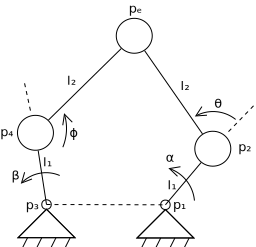
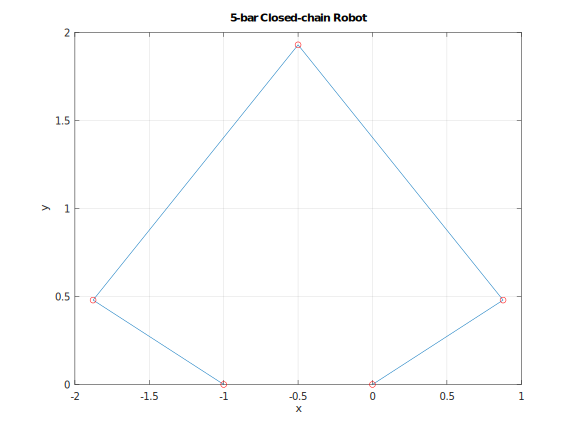
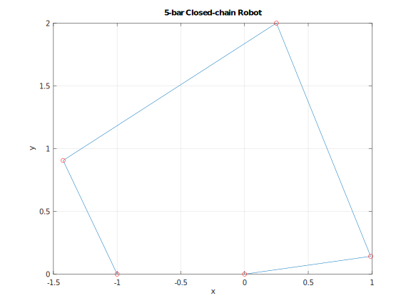

For some reason the leap from serial manipulator kinematics to closed-loop kinematics was a major hurdle for me. Hopefully this blog post will make that transition easier.
Consider a 5-bar robot with two controlled angles and 2-DOF control of the end-effector:

From the linkages on the right, the end-effector position is given by
%Constant parameters
l1 = 1;
l2 = 2;
alpha = 0.5;
beta = pi - alpha;
x1 = 0;
y1 = 0;
x3 = -1;
y3 = 0;
%Numerical objective function to calculate error of guessed passive joint values
objectiveFunction = @(angles) [
x1 + l1*cos(alpha) + l2*cos(alpha+angles(1)) - (x3 + l1*cos(beta) + l2*cos(beta+angles(2)));
y1 + l1*sin(alpha) + l2*sin(alpha+angles(1)) - (y3 + l1*sin(beta) + l2*sin(beta+angles(2)))
];
%Call a rountine to iteratively update the guess, guiding error to zero
initial_guess = [0;0];
numerically_solved_angles = fsolve(objectiveFunction, initial_guess);
%Calculate end effector position from solved joint values
xe = x1 + l1*cos(alpha) + l2*cos(alpha+numerically_solved_angles(1))
ye = y1 + l1*sin(alpha) + l2*sin(alpha+numerically_solved_angles(1))
%Plot the robot
x2 = l1*cos(alpha);
y2 = l1*sin(alpha);
x4 = x3 + l1*cos(beta);
y4 = y3 + l1*sin(beta);
plot([x1;x2;xe;x4;x3],[y1;y2;ye;y4;y3])
hold on
plot([x1;x2;xe;x4;x3],[y1;y2;ye;y4;y3],'or')
hold off
xlabel('x')
ylabel('y')
title('5-bar Closed-chain Robot')
grid on
daspect([1 1 1])

So using a numerical solution, we have solved the forward kinematics without thinking too hard.
So what if we want to solve the controlled motor angles α and β to reach a certain end-effector position xₑ and yₑ? This is a fairly trivial change- we could guess all the joint variables, {α,β,θ,ϕ}, then have four error equations, two for each side:
%Constant parameters
l1 = 1;
l2 = 2;
xe = 0.25;
ye = 2;
x1 = 0;
y1 = 0;
x3 = -1;
y3 = 0;
%Numerical objective function to calculate error of guessed joint values
objectiveFunction = @(angles) [
xe - (x1 + l1*cos(angles(3)) + l2*cos(angles(3)+angles(1)));
ye - (y1 + l1*sin(angles(3)) + l2*sin(angles(3)+angles(1)));
xe - (x3 + l1*cos(angles(4)) + l2*cos(angles(4)+angles(2)));
ye - (y3 + l1*sin(angles(4)) + l2*sin(angles(4)+angles(2)))
];
%Call a rountine to iteratively update the guess, guiding error to zero
initial_guess = [0;0;0;0];
numerically_solved_angles = fsolve(objectiveFunction, initial_guess);
%Plot the robot
alpha = numerically_solved_angles(3)
beta = numerically_solved_angles(4)
x2 = l1*cos(alpha);
y2 = l1*sin(alpha);
x4 = x3 + l1*cos(beta);
y4 = y3 + l1*sin(beta);
plot([x1;x2;xe;x4;x3],[y1;y2;ye;y4;y3])
hold on
plot([x1;x2;xe;x4;x3],[y1;y2;ye;y4;y3],'or')
hold off
xlabel('x')
ylabel('y')
title('5-bar Closed-chain Robot')
grid on
daspect([1 1 1])

So the easiest way to solve closed-chain manipulator kinematics is to do an accounting of the unknown variables and the constraints on the problem, then come up with a set of variables to guess and a set of error equations. Of course there is much more complexity to dig into (analyical solutions are usually better, the choice of objective function is non-unique and might affect error convergence, numerical approaches aren't well suited for multiple solutions, etc...). But hopefully this short post helps illuminate closed-chain constraints.
The analyical solution is explained rather well in the paper "The Pantograph Mk-II: A haptic instrument".
I showed my blog to some friends, and Brett slammed me for not being interactive enough. To make up for my shame, here is a more interactive WASM demo of the inverse kinematics. The end-effector is moved by arrow or WASD keys.